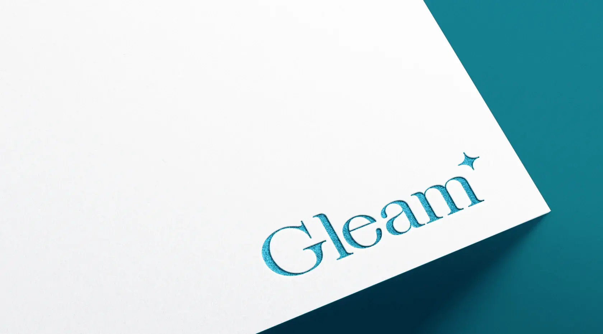
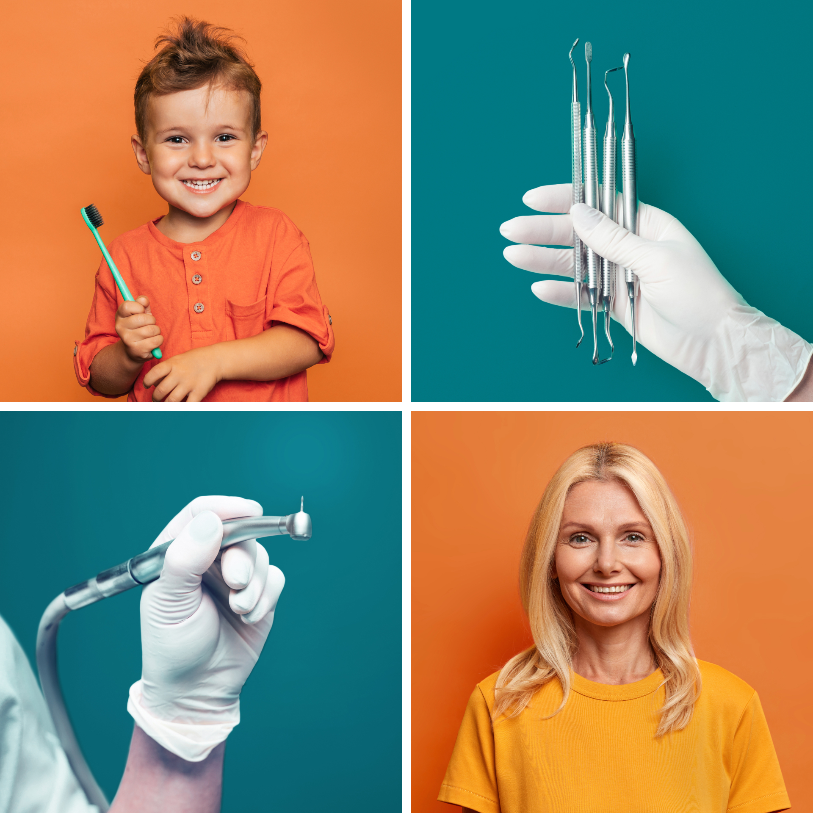
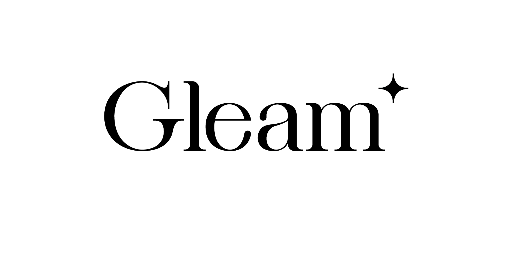
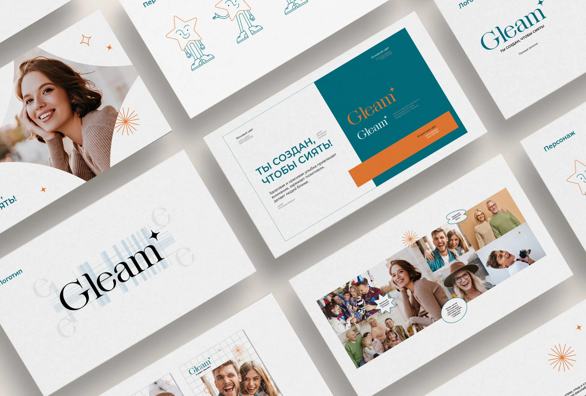
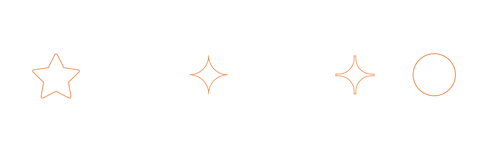
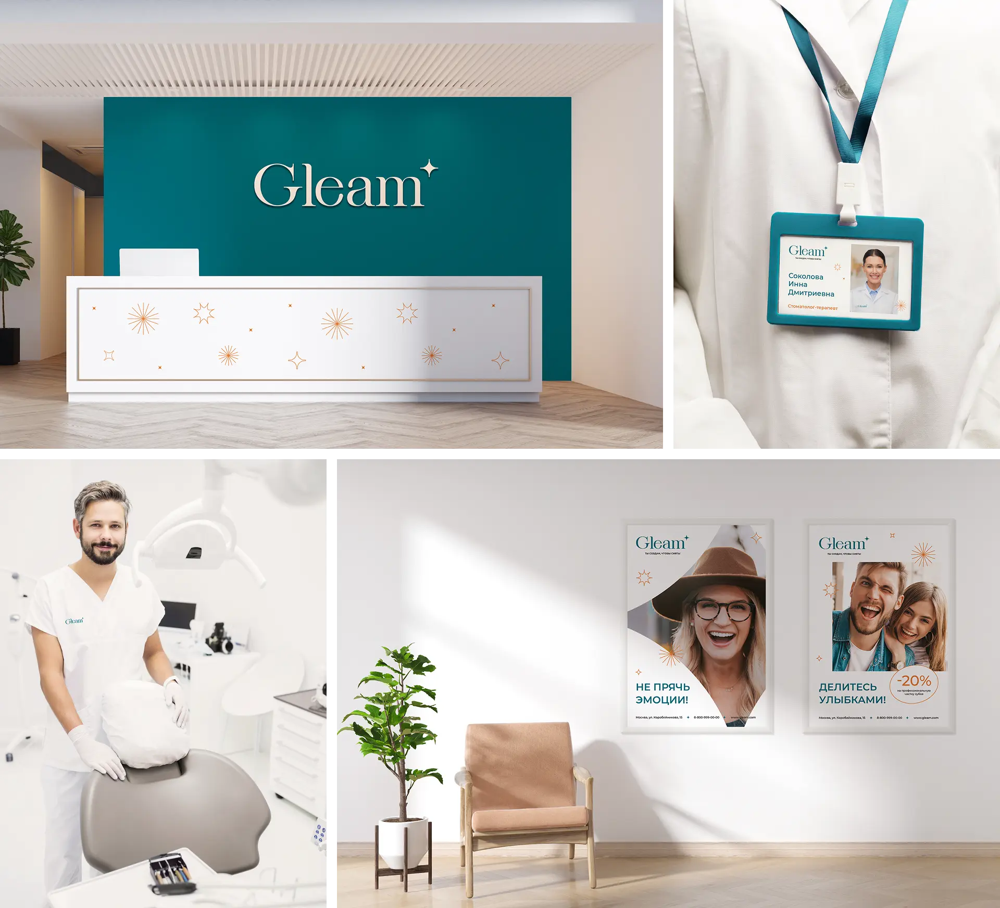
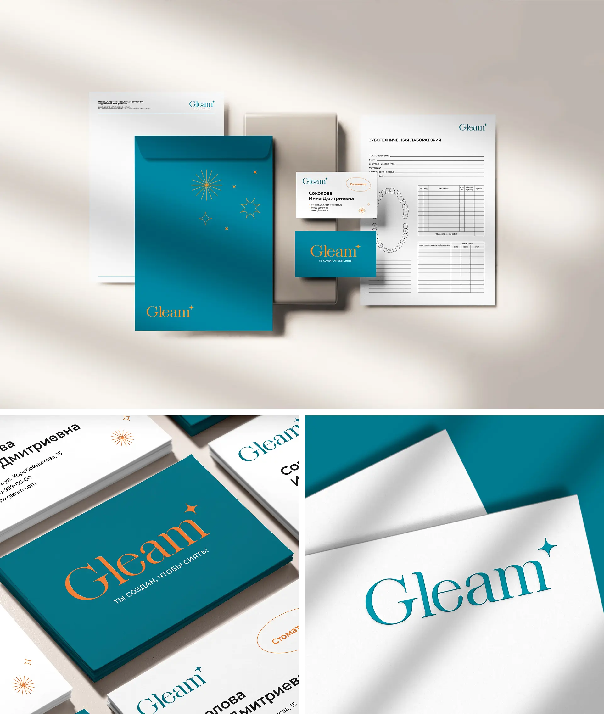
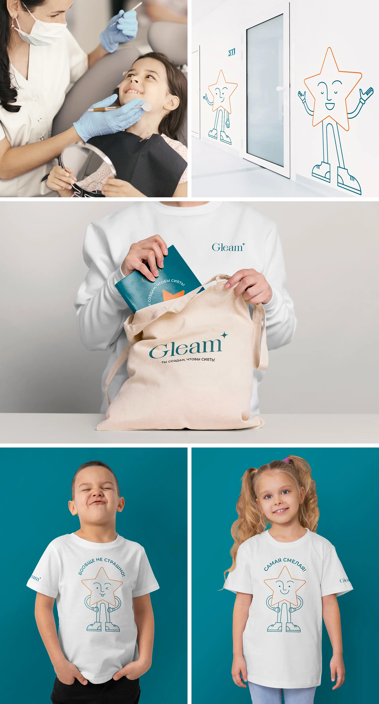
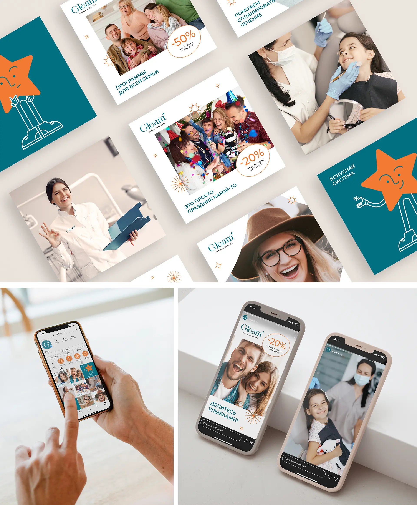

Стоматологическая клиника GLEAM
Разработка визуальной идентичности для концепта стоматологической клиники GLEAM. Проект включал создание логотипа, фирменной графики, бренд-персонажа, анимации и визуальной системы коммуникации, направленной на формирование более теплого и доверительного образа стоматологии.
Для многих людей посещение стоматолога связано с тревогой, страхом и чувством дискомфорта. Стоматологические клиники часто воспринимаются как холодные и формальные пространства, в которых сложно чувствовать себя спокойно.
Целью проекта было создать бренд, который смягчает негативные ассоциации со стоматологией, снижает эмоциональное напряжение и помогает выстроить доверительные отношения с пациентами. Важно было показать клинику как пространство заботы, поддержки и профилактики, мотивирующее клиентов регулярно заботиться о здоровье, а не обращаться за помощью только в критических ситуациях.

В основе концепции лежит образ сияющей улыбки — символа уверенности, открытости и радости общения.
Стоматологическая клиника GLEAM не только заботится о здоровье зубов, но и помогает людям чувствовать себя увереннее, свободнее общаться и раскрывать свой потенциал. Бренд становится надежным помощником и поддержкой на пути к внутреннему и внешнему сиянию.
Ключевой метафорой проекта стало сияние, а центральным визуальным образом — звезда, символизирующая уверенность, заботу и личное преображение.
В основу визуальной системы легли образы звезды и свечения. Эти элементы используются на всех уровнях айдентики: от логотипа и фирменной графики до коммуникационных материалов и бренд-персонажа.
Чтобы снизить ощущение напряжения, характерное для медицинской сферы, острые формы были смягчены и адаптированы в более дружелюбную графику. Цветовая палитра построена на сочетании белого, символизирующего чистоту, сине-зеленого, ассоциирующегося со спокойствием и надежностью, и оранжевого, передающего заботу, тепло и позитивные эмоции.
Визуальная система также строится на контрастах: теплых и холодных оттенков, мягких и геометричных форм. Этот прием отражает двойственную природу стоматологии — сочетание медицинской точности и искренней заботы о пациентах.





Бренд-персонажем стала звезда — дружелюбный проводник в мире стоматологии. Персонаж помогает сделать коммуникацию более живой и эмоциональной, поддерживает пациентов и снижает тревожность, особенно у детей.
Он используется в различных точках контакта с брендом: в социальных сетях, детской зоне клиники, сувенирной продукции и других коммуникационных материалах.


В этом проекте я отвечала за:
- разработку концепции и визуальной метафоры
- создание логотипа и айдентики
- разработку фирменной графики
- создание бренд-персонажа
- разработку анимации и презентацию проекта
профит
для бизнеса
- Формирование более теплого и человечного образа стоматологической клиники.
- Снижение эмоционального барьера перед посещением стоматолога.
- Повышение уровня доверия и лояльности пациентов.
- Создание запоминающегося бренда, выделяющегося среди типичных медицинских клиник.
- Усиление коммуникации с семейной аудиторией и детьми за счет использования бренд-персонажа.